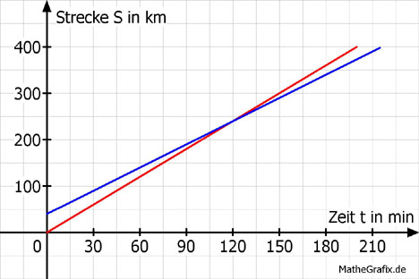

Lineare Funktionen Aufgabe 102 Ein ICE fährt um 8.00 Uhr mit einer Durchschnittsgeschwindigkeit von 120 km/h von Ort A zu dem 400 km entfernten Ort C. Ein IC fährt ebenfalls um 8.00 mit einer Durchschnittsgeschwindigkeit von 100 km/h von Ort B aus zu Ort C. A und B sind 40 km voneinander entfernt. Der IC und der ICE fahren in dieselbe Richtung. a) Nach wie viel Minuten fährt der ICE durch den Ort B? b) Wie viel Minuten ist der IC später in C? c) Nach wie viel Stunden und nach wie vielen Kilometern überholt der ICE den IC? d) Wie groß müsste die Geschwindigkeit des ICE sein, um gleichzeitig mit dem IC in C einzutreffen? e) Wie weit müsste der Ort B von A entfernt sein, damit ICE und IC gleichzeitig in C eintreffen? a)  SICE = 120 * t t in h SIC = 100 * t + 40 t in h 40 = 120 * t | :120 1 t = ---- h = 20 Minuten 3 b) ICE: 400 km 1 t = ------------- = 3 -- h = 3 h 20 min 120 km/h 3 IC: 360 km t = ------------ = 3,6 h = 3 h 36 min 100 km/h Die Zeitdifferenz beträgt 3 h 36 min - 3 h 20 min = 16 Minuten c) Abgelesen: t = 120 min = 2 h oder mit Rechnung: 120 * t = 100 * t + 40 | - 100 * t 20 * t = 40 | :20 t = 2 h s = 120 km/h * 2 h = 240 km d) Der ICE dürfte 3,6 h Stunden wie der IC für die 400 km brauchen. 400 km v = --------- = 111,1 km/h 3,6 h e) Der IC legt in 3,33 h, Fahrzeit ICE, s = 100 km/h * 3,33 h = 333 km zurück. A müsste also 400 km - 333 km = 67 km von B entfernt sein.